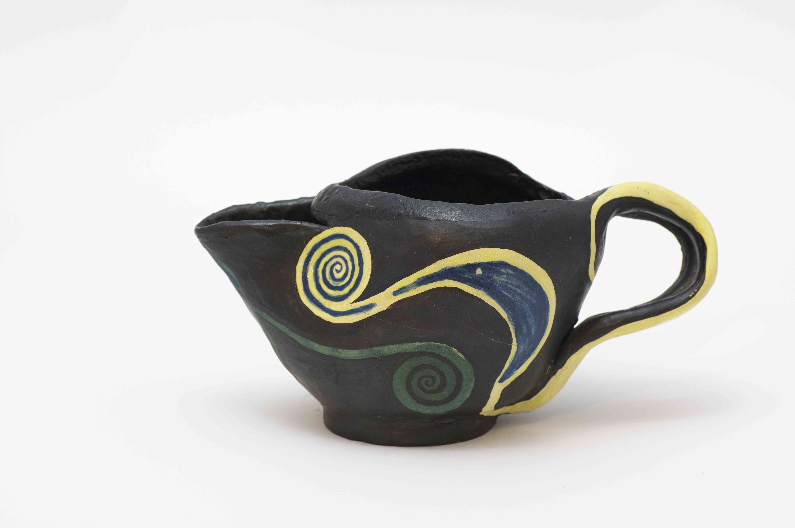
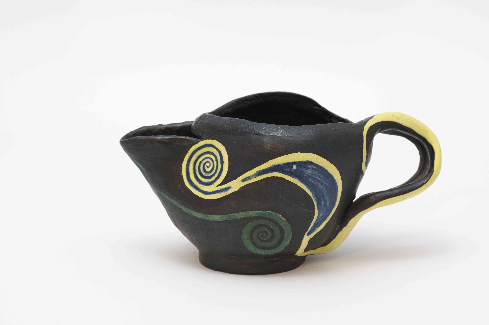

"Fantasia" kann als Milchkännchen oder kleine Objekt genutzt werden. Bestehend aus weissem Ton, in der Grundform gedreht und im lederharten Zustand weiter gestaltet, besticht dieses Unikat mit ungewöhnlicher Form und die Engobenbemalung. Nachdem Schrühbrand wurde die Innenseite schwarz glasiert und hoch gebrannt. "Fantasia" ist eine Unikatsengobe. Bitte nicht in den Geschirrspüler.
(Höhe 9cm, Schalendurchmesser 6cm, Länge oben 17cm, breiteste Stelle 7cm)
Hier entstand die Grundform auf der Drehscheibe aus hellem Ton. Im lederharten Zustand bekam das Gefäss eine ovale Oberseite und einen kleinen, aber standfesten Sockel. Die Aussenseite ist mit dunkelblauer Engobe behandelt, in die Ornamente so geritzt wurden sind, dass das helle Grundmaterial wieder sichtbar wird und zum Hinschauen einlädt. Dann erfolgte der Schrühbrand. Innen verläuft eine hochgebrannte Glasur in hell- und dunkelblauen Farbtönen.
(Höhe 10.5cm, Sockeldurchmesser 4cm, Länge oben 11cm, breiteste Stelle oben 8.5cm)
Das Grundmaterial bei "Geo" besteht aus hellen Drehton und die Grundform entstand auf der Drehscheibe. Danach ist erst im
lederharten Zustand die endgültige Form mit den beiden geometrischen Ornamenten gearbeitet worden. Diese Ornamente haben
den Titel bestimmt und setzen das Gefäss so richtig in Szene. Beide Ornamente sind erhaben modelliert und ockerfarben engobiert.
Dadurch heben sie sich gut von dem schwarz-engobierten Hintergrund ab. Nachdem Schrühbrand wurde die Innenseite mittel-blau glasiert
und hoch gebrannt, damit das Gefäss auch benutzt werden kann.
Aber bitte nicht in den Geschirrspüler, beim Gefäss "Geo" handelt es sich um eine Unikatsengobe.
(Höhe 13cm, Sockeldurchmesser 9cm, Durchmesser oben 12cm)
Die Schale "Geo" ist aus hellem Ton auf der Drehscheibe hergestellt und im lederharten Zustand weiter behandelt worden:
Die Aussenseite wurde poliert und das geometrische Ornament, das auch Titelgeber der Schale ist, plastisch herausgearbeitet.
Dieses Ornament wurde dann mit cremgelber Engobe behandelt, während der Hintergrund schwarze Engobe erhielt. Auf diese Weise hebt
sich das Ornament wunderbar ab und wird so zum "Eycatcher". Erst danach erfolgte der Schrühbrand und die Innenseite konnte
in Dunkelblau flasiert und im Glasurbrand fertiggestellt werden.
Da "Geo" eine Unikatsengobe ist, bitte nicht in den Geschirrspüler.
(Höhe 8cm, Sockeldurchmesser 6.5cm, Durchmesser oben 14cm)
Verschiedene Blautöne lassen das unverwechselbare Monddesign brillieren und geben dem Ganzen eine Tiefe mit
"eyecatcher – Qualitäten". Mit Teelicht-Glasschale, die einen ganz individuellen Akzent
in Wohn – oder Schlafbereich bringt.
(Durchmesser: 10 cm, Höhe: 12,5 cm)
Gefäß mit Deckel, bei dem sich blaue, ein wenig ins grün gehende Streifen spiralförmig nach oben ringeln und in der Wasserspirale auf dem Verschluss harmonisch zusammenkommen. Die asymmetrische Formensprache lässt eine warme Lebensenergie und starke Individualität spüren. In diesem Sinn ist „Spiral“ eine interessante Aufbewahrungsvariante für Lebensmittel, wie z. B. Zucker, Salz, Rosinen etc..
(Höhe: 11 cm ;Durchmesser Deckel: 4 cm)
Große Tasse / Trinkgefäß mit Henkel, das die Verbindung zwischen Kreatur und Wasser deutlich zum Ausdruck bringt: ineinanderübergehende beige und blaue Farbtöne lassen ein Gesicht auf der Außenseite erkennen und einen Fisch auf der Innenseite. Glatte und raue Oberflächenstellen wechseln sich an der Außenseite ab, Lebensspuren, die von Grüntürkis und Schwarz unterstrichen werden und wieder in Blautönen münden. Hier entsteht durch Farbe, Form und Material eine ganz besondere Art der Harmonie.
(Höhe: 9 cm; Durchmesser: 12 cm)